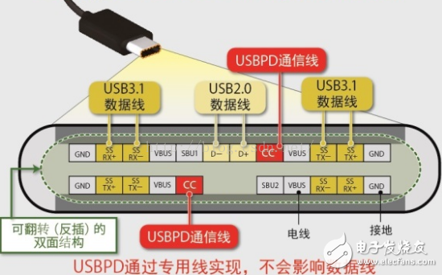
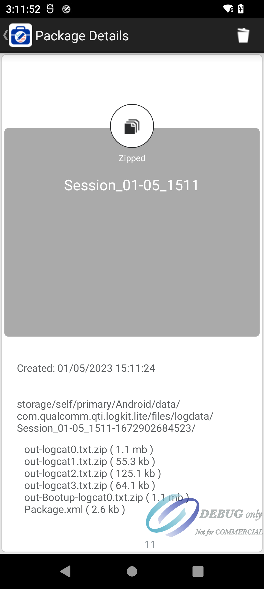

temp¶
https://blog.csdn.net/whitefish520/article/details/106763476?ops_request_misc=%257B%2522request%255Fid%2522%253A%2522167403584916800192249817%2522%252C%2522scm%2522%253A%252220140713.130102334.pc%255Fblog.%2522%257D&request_id=167403584916800192249817&biz_id=0&utm_medium=distribute.pc_search_result.none-task-blog-2~blog~first_rank_ecpm_v1~rank_v31_ecpm-11-106763476-null-null.article_score_rank_blog&utm_term=USB&spm=1018.2226.3001.4450
usb¶
usb 图标

usb接口名字

type-c 接口线定义

type-c 接口线定义2

microusb接口线定义
microusb otg线 内部原理图
左边接口手机,手机检测 id脚拉到地, 切换成host模式 手机id脚 默认拉高,做device模式 电脑id脚也是拉低,host模式

usb 是什么¶
Universal serial bus,通用串行总线
usb解决什么问题¶
简化与外设的易用性,努力做到接口统一,并且支持热插拔
usb otg¶
由于usb是主从模式,两个主机,两个从机无法通信.所以提出otg(on the go),允许设备在不同情况下主从切换
usb 速度¶
usb 1.0,usb 1.1¶
支持低速1.5Mbps,全速 12Mbps
usb 2.0¶
高速模式,480Mbps,高速模式是可选的，不一定所有USB芯片都支持
usb 3.0¶
5.0 Gbps
usb 4.0¶
40Gbps,兼容雷电3,雷电4协议,并向后兼容 USB 3.2 和 USB 2.0

usb 拓扑结构¶
usb是主从模式,主机叫host,从机叫device.
一个主机有一个或者多个主控制器(host controller)和根集线器(root hub).
主控制器 负责数据处理,根集线器提供一个连接主控制器与device的接口与通路.
usb集线器(usb hub)可以对原有的usb口在数量上拓展,但不增加带宽,所以usb可以层层拓展,但 总数量有限.
usb 电气特性¶
usb 2.0 4根线,vcc,D+,D1,gnd
otg 多一根线,id脚,用于判断主从
usb 2.0 三种传输速度,低速,1.5Mbps,全速12Mpbs,高速480Mbps
usb 插入检测¶
主机端:D+,D- 15K电阻下拉到地,
从机端:D+,D-接1.5K 电阻上拉,具体接D+,D-,由速度决定
D+:全速,高速
D-:低速
当从机接入主机后,D-或者D+就会分压,主机检测到 D+,D- 电平变化,知道有设备插入
usb描述符¶
usb主机如何知道usb设备的功能?
通过设备的描述符,描述符中,记录了设备的类型,厂商id等.
设备描述符(Device Discriptor)
一个usb设备,只有一个设备描述符.设备描述符描述了该设备有多少配置,每种配置对应一个配置描述符.
设备描述符主要描述信息,